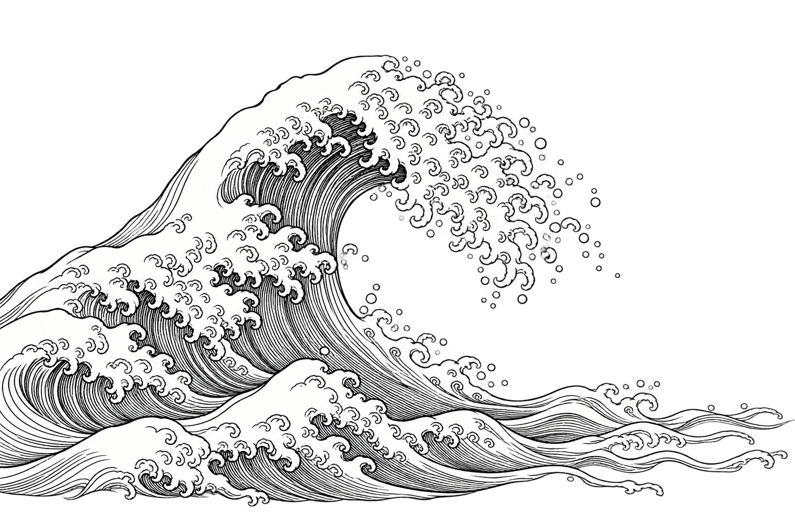

Assistente de desenvolvimento
SDD-Buddy
Uma conversa que ajuda a transformar ideias soltas em especificações de software, com etapas e artefatos para revisar.
Python / FastAPI / ReactConhecer o projeto
Desenvolvimento, dados e inteligência artificial.
Venho de vendas. Construo com código.
Investigo o que a IA pode fazer por quem projeta e constrói.
Curiosidade como ponto de partida.
Comportamento real como evidência.
Experimentos que ganharam forma.
Código, decisões e espaço para melhorar.
Assistente de desenvolvimento
Uma conversa que ajuda a transformar ideias soltas em especificações de software, com etapas e artefatos para revisar.
Busca em documentos
Perguntas sobre gestão de estoques, respondidas a partir de documentos. A resposta vem com os trechos usados como fonte.

Traço → recorte → profundidadeExploração em andamento
Uma identidade pessoal construída entre gravura japonesa e papel recortado. O desenho ganha profundidade com a sua interação.
Ilustrações conceituais dos projetos. Os repositórios mostram a implementação.
Antes de escrever código,
aprendi a ouvir pessoas.
Minha trajetória começou em vendas. Negociar, entender um problema e explicar uma solução fizeram parte do trabalho muito antes da primeira linha de código.
Essa experiência segue comigo no desenvolvimento de sistemas, em dados e na aplicação de inteligência artificial à arquitetura e construção. Gosto de aproximar o que a tecnologia permite do que uma pessoa realmente precisa.
Aqui reúno projetos pessoais e o que aprendo ao construí-los. Com espaço para testar, mudar de ideia e mostrar o caminho.
Conheça minha trajetóriaO problema vem primeiro. A ferramenta precisa fazer sentido para quem vai usá-la.
Uma ideia interessante precisa encontrar o comportamento real de um sistema.
A IA amplia possibilidades. O julgamento e a responsabilidade continuam com as pessoas.
Um arquivo para testes, aprendizados
e perguntas que continuam abertas.
Estou organizando este espaço para reunir o que publico e descubro pelo caminho. Enquanto isso, a conversa continua nas redes.
Gosto de trocar ideias sobre desenvolvimento, dados e IA. Conte o que está investigando, mostre um projeto ou traga uma boa pergunta.
Converse no LinkedIn